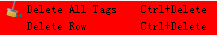
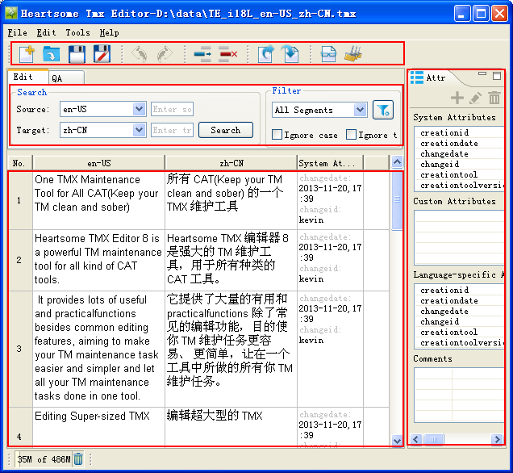
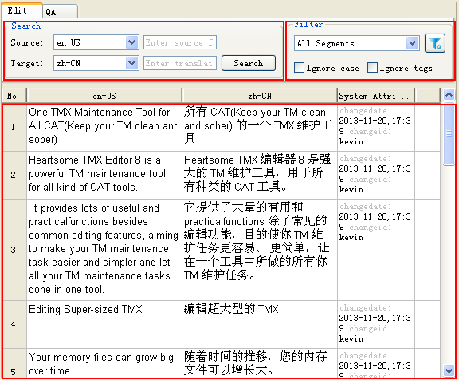
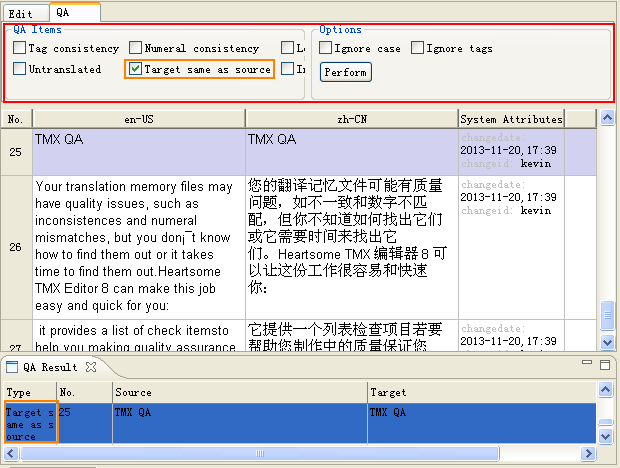
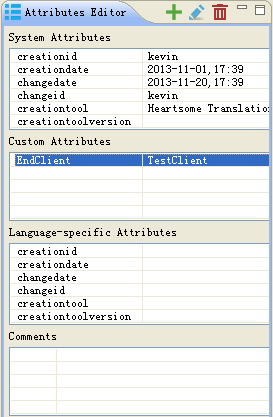
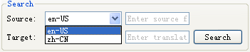
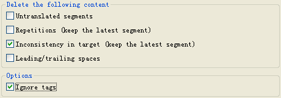

The following tells you how to get started with and configure Heartsome TMX Editor 8.
-
To quickly edit a TMX file:
1. Select File > Open TMX, then select a TMX file from the pop-up dialog box.
2. After your TMX file is open in the editor, click any cell to edit.
3. Every time you click on a segment, the Attributes Editor panel will display the attribute information of the currently selected segment. You can edit attribute information using the Add/Edit/Delete button.
4. When you edit the TMX, remember to click on the
 button or press CTRL + S to save your
changes. But even without doing this, your changes will not be
lost because they are cached.
button or press CTRL + S to save your
changes. But even without doing this, your changes will not be
lost because they are cached.5, Any changes to attributes will be saved automatically without you having to save them manually.
-
To quickly edit a Heartsome Translation Studio 8 TM
1. Select File > Connect to TM, then select a TM type.
When you select a File-based TM, you can browse to the directory where TM is saved. When you select a Server-based TM, you will have to enter the IP address, port, username, password etc., to connect to your desired server-based TM
3. You can edit the connected Heartsome TM in the same way as editing a TMX file.
Changes to a Heartsome TM will be saved in real time, without having to manually save.
-
Auto Update: Use this to periodically check for updates on Heartsome's server.
-
User Interface Language: English and Simplified Chinese UIs are available.
-
Username:Your username is used as the default changeid for TUsin TMX files.
-
System default proxy:If the proxy server has been configured in your operating system, select the Native option.
-
Custom proxy:If you want to set up a proxy server specifically for Heartsome TMX Editor 8, select the Manual option. Then Click the proxy server type (HTTP, HTTPS or SOCKS) under the Proxy entries, then enter the proxy host address and port. You may need to enter a username and password depending on whether your proxy server requires authentication.
In addition, you can also set some exceptions for host addresses. When you access these host addresses, the software will connect to them directly without the proxy server. The exceptions usually include your machine (localhost or 127.0.0.1) and LAN (192.168.*.*).
-
Toolbar: Here you can find some shortcuts for commonly used functions. You can also use the corresponding shortcut keys to perform related functions.
-
Search and QA: Here you can find a keyword search and TMX QA in two tabs.
-
Source and translation editor: This is the main editing area where you can edit the source text and translations.
-
Attribute editor: Here you can edit all the TU attributes.
-
Search: Here you can switch languages and perform keyword searches.
-
Filters: Choose between built-in filters and custom filters.
-
Editor: This the editing area of the TMX.
This introduces you to Heartsome Translation Studio 8 TM and shows you how to quickly edit TMX files.
In System settings, you can set the frequency of Auto Update, and change the User Interface Language, Fonts and your current Username.
You can customize shortcuts for any function. To do this:
1. Click on the shortcut
field of the corresponding function to enter edit
mode .
.
2. Press your desired shortcut key combination on the keyboard.
3. Click anywhere else in the interface to automatically exit edit mode.
4. Click the Apply or OK button to save your changes.
5. If your customized shortcuts conflict with other shortcuts, the conflicts will be highlighted in red.
In the Network Connection settings, you can configure a proxy server for your Internet connection. Choose one of the following proxy server configurations according to your actual situation:
Heartsome TMX Editor 8 contains the following views:

Select Tools > Options > System, then go to the User Interface Language field to change the UI.
The Edit View consists of two views, one is Search and Filter, and the other is the Editor. In the Search and Filter panel, you can switch languages (if available) and search for keywords throughout the TMX. You can also filter specific segments with the built-in and customized filter.
 Note: The Search panel and Filter
panel function are independent from each other.
Note: The Search panel and Filter
panel function are independent from each other.

The QA View consists of the QA Options and QA Results panels. Double-clicking on QA result takes you straight to the relevant line in the editor.

In this panel, you can edit a TU's system attributes, custom attributes, language-specific attributes and comments. The four attributes groups are located in four different forms for viewing and editing.

1. Select File > New TMX File, click the button or press Ctrl + N to open the New TMX File dialog box.
2. Select "Save path", then set the source language and target language for the new TMX. Click the OK button to complete the TMX file creation.
3. Once the TMX has been successfully created, it will open, but the TMX will be empty. You have to enter content according to the TMX standard.
Heartsome TMX Editor 8 supports multilingual TMX files. You can switch languages at any time for viewing and editing.
1. Open the multilingual TMX files.
2. As descripted in the Editor View section above, you can switch source and target languages as needed.

3. Click the Search button to display the content of your selected language pair.
-
Edit the source text and the translation
To enter editing mode, you can just click a source or target cell. Once you have finished editing, remember the following points:
-
If you click in another location, the software will automatically cache the changes, but these changes will not be saved to the original TMX file (excluding Heartsome Translation Studio 8 TM). The cached content will not be lost if you forget to save.
-
After editing, click
or press CTRL + s to save changes to
your original TMX files.
-
-
When you want to make changes to TU attributes, you can do this in the following ranges: "Currently selected row", "All filtered results" and "Whole file/TM". Read on for further details:
-
 Special
note:For system attributes, only attribute values can
be edited.
Special
note:For system attributes, only attribute values can
be edited.1. To edit system attribute values: Select the attribute row you want to edit, click the button. In the pop-up dialog box, edit the attribute value, then click OK to finish editing.
2. To delete system attribute values: Select the attribute row with the value you want to delete, click the
 button to delete the value.
button to delete the value. -
Editing TU custom attributes
Special
note:For custom attributes, you can add, edit and
delete attribute names and their values.1. To add custom attributes: Select any row in the Custom Attributes panel, then click the
 button, In the pop-up dialog box, enter a
custom attribute name and attribute value, then click OK to
complete the operation.
button, In the pop-up dialog box, enter a
custom attribute name and attribute value, then click OK to
complete the operation.2. To edit custom attributes: Select any row in the Custom Attributes panel, then click the button, In the pop-up dialog box, enter a custom attribute name and attribute value, then click OK to complete the operation.
3. To delete custom attributes: Select any row in the Custom Attributes panel, then click the
Button to delete. -
To edit language-specific attributes:
Editing language-specific attributes is the same as editing system attriubute.
-
-
1. To add a comment: Select any row in the Comments panel, Click the
button. In the pop-up dialog box, enter the
comment. Then click OK to complete the operation.2. To edit a comment: Select any row in the Comments panel, Click the button. In the pop-up dialog box, enter the comment. Then click OK to complete the operation.
3. To delete a comment: Select any row in the Comments panel, Click the
Button to delete.
-
To split TMX
1. Select Edit > Split TMX. The Split TMX dialog box will open.
2. Specify the number of subfiles.
3. Select the TMX file to be split.
4. Set a save path for the subfiles. If you checked Original File Path, the subfiles will be kept in the directory where the master TMX file is located. If you checked "Save as", the subfiles be placed in the specified directory.
-
To merge TMX
1. Select Edit > Merge TMX. The Merge TMX dialog box will open.
2. Click the Add button to add the subfiles to the list.
3. Select the save path of the TMX to be merged.
4 Click the OK button to perform the merge.
-
Delete untranslated segments:This deletes segments with no translation.
-
Delete repetitions (keep the latest instance): This deletes a set of repetitions, but keeps the most recent one.
-
Delete inconsistency in target (keep the latest instance): This deletes segments that have the same source text but a different translation. The most recent one will be kept.
-
Delete leading/trailing spaces: This deletes spaces at the beginning or end of segments.
The Split and merge feature provide a way for several people working together to edit a TMX file.
This feature can be used to change the language code of each translation unit in the TMX file.
1. Select Edit > Change Language Code. The Change Language Code dialog box will open.
2. Select the source and target language you want to change.
3. Click on the OK button to complete the batch change.
This feature can be used to delete a specific language (TUV) from a TMX file. Note: You can not delete the source language.
1. Select Edit > Delete Specified Language. The Delete Specified Language dialog box will open.
2. Select one or more languages to be deleted.
3. Click the OK button to complete the deletion.
This feature can be used to delete all tag information from a TMX file.
1. Select Edit > Delete All Tags
2. Click OK to perform the operation. This operation cannot be undone.
The following segments are regarded as redundant content: untranslated segments, repetitions, inconsistent translations and leading/trailing spaces. Heartsome TMX Editor 8 can batch delete these segments.
1. Select Edit > Clean up TM. The Clean up TM dialog box will open.
2. Select the redundant items you want to clean in the dialog box.

3. You can also check Ignore tags when finding repetitions.
4. Perform the clean-up operations.